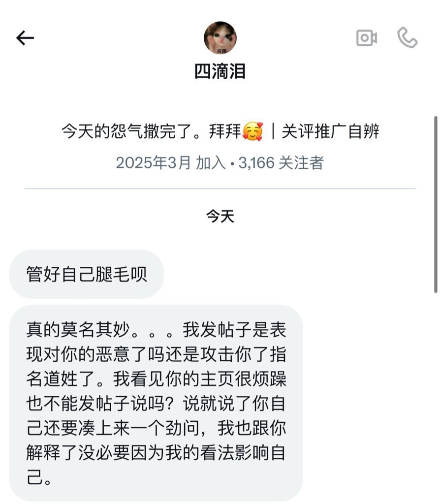
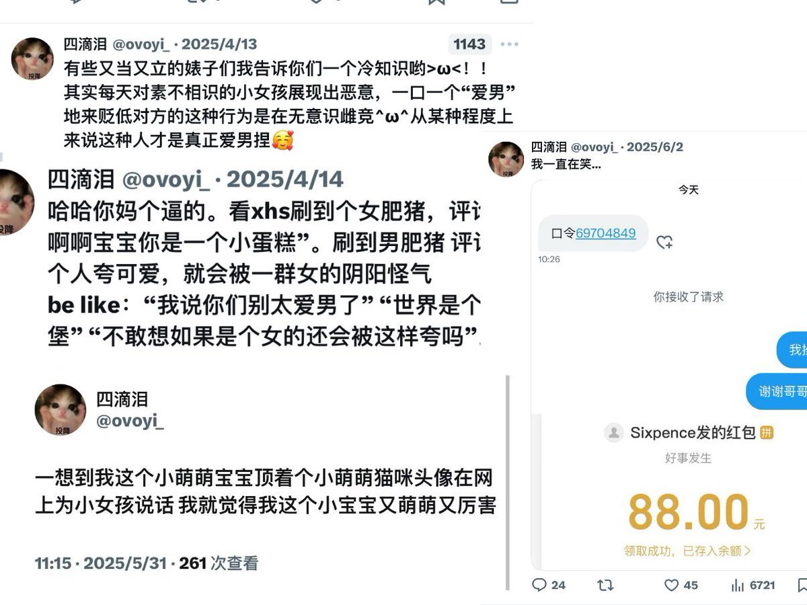
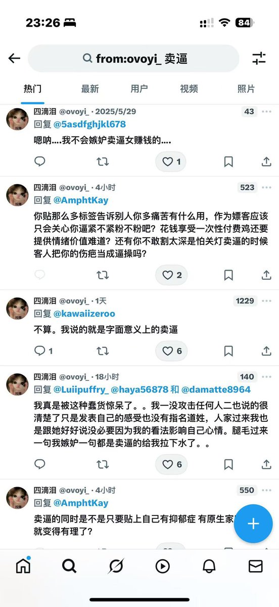

Winit420
@winterfruit_1
@damatte8964 现在四滴泪像一条区一样似了



小咪之家
@damatte8964
四滴泪是我第一个发推文主动嘴的人哈
首先我不懂你都这么烦了还看我帖子的意义是？严格意义上来说我都不算卖逼的 我只跟关系好的门槛哥线下过并且总数连五个都不到 也不是给钱就能操我 但硬要说我卖逼我也认了行不行？反正我自己也喜欢开这个玩笑。四滴泪大人天天只要生活一不如意就骂卖逼女呗 https://t.co/rN9asByhoD